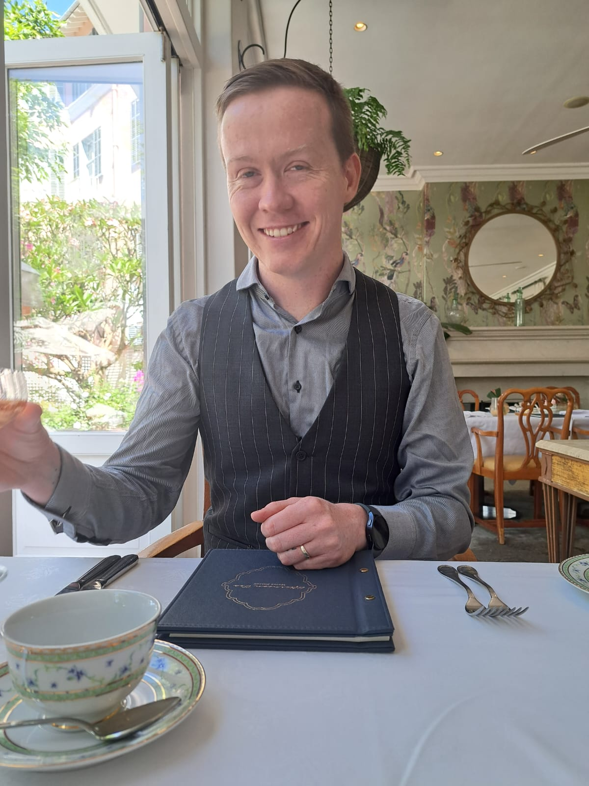

Liam Joubert

I am a friendly, charmismatic people person. My personal philosophy is
to form as many meaningful
connections as possible while leaving a positive impact on the world around me.
I have been working for the last 14 years in several different fields. I have my own
small business as a performing magician and master of ceremonies.
I am extremely passionate and motivated. I believe one of my strongest skills is my
desire to always keep learning.
Received a National Senior Certificate in 2013
Subjects completed: English Home Language, Life Orientation, Physical Science, Life Science, Information Technology, Afrikaans (FAL) and Mathematics Core
Received a distinction in Mathematics Core
Studied abroud for 1 year.
Subjects studied include: Psychology, Photography, Computer Literacy, Trigonometry, US History and English
Currently studying a full stack web development course